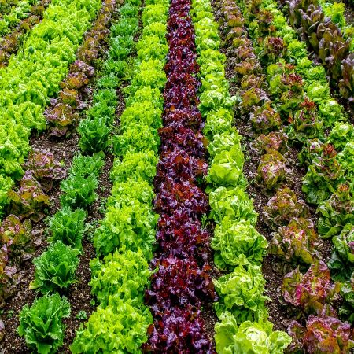

1.SUBSISETENCE FARMING
Majority of farmers in the country practise subsistence farming. It is characterised by small and scattered land holdings and use of primitive tools. As the farmers are poor, they do not use fertilisers and high yielding variety of seeds in their fields to the extent they should do. Facilities like electricity and irrigation are generally not available to them.